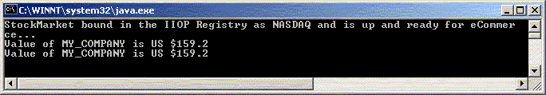

RMI-IIOP
Building an Java/RMI
Client using IIOP
| Note |
| To
work with any of these samples, you will need the
following: .........................................JDK 1.3 or Higher (I use JDK version 1.4) .........................................The COS Naming JNDI Service Provider (I use JNDI version 1.2.1) |
Building Java/RMI Client that uses OMG's IIOP (Internet Inter-ORB Protocol) wire protocol
Developing an RMI/IIOP client is really simple and straight-forward.
The various steps that are involved in creating an RMI Client that uses the IIOP protocol are as follows:
Create the Client class
Copy the IIOP Stubs and compile the Client
Make sure the Server is running and then startup the Client
1. Create the Client Class File
Create the RMI Client - RmiClient.java - in a package called RmiClient. The main difference between a JRMP Client and an IIOP client is the use of the PortableRemoteObject class. The other difference is the use of JNDI to locate a reference to the Server as shown on Line 48. As soon as a reference is found, the PortableRemoteObject object is used to narrow down the reference to the appropriate type, once again as shown on Line 48. Once the reference to the appropriate type is found, you can invoke any operation on it as shown on Line 53.
| RmiClient/RmiClient.java | ||
|
2. Copy the IIOP Subs and Compile the Client
Copy the IIOP Stubs from the SimpleStocks folder to the RmiClient folder, and compile the client as shown below.
| Command Prompt |
|
C:\MyProjects\Cornucopia\iiop>copy
.\SimpleStocks\_StockMarket_Stub.class .\RmiClient 1 file(s) copied. C:\MyProjects\Cornucopia\iiop>copy .\SimpleStocks\_StockMarketImpl_Tie.class .\RmiClient 1 file(s) copied. C:\MyProjects\Cornucopia\iiop>javac -classpath . .\RmiClient\RmiClient.java C:\MyProjects\Cornucopia\iiop> |
3. Make sure that the Servers are running and startup the client
Make sure that the Servers are up. If they are not, start them up using the following commands.
| Command Prompt |
|
C:\MyProjects\Cornucopia\iiop>start
tnameserv -ORBInitialPort 1000 C:\MyProjects\Cornucopia\iiop>start java -classpath . StockMarketServer C:\MyProjects\Cornucopia\iiop> |
The screen shot below shows the COS Naming Services Server up and running.

The screen shot below shows our RMI Server up and running across Client invocations

Startup the Client as shown below, and invoke operations on the Server.
| Command Prompt |
|
C:\MyProjects\Cornucopia\iiop>java
-classpath . RmiClient.RmiClient The price of MY COMPANY is 159.2 C:\MyProjects\Cornucopia\iiop> |
|
|
Java/RMI |
|
|
Java/RMI - Under The Hood |
|
|
Developing a Java/RMI Server using JRMP |
|
|
Developing a Java/RMI Client using JRMP |
|
|
Developing a Java/RMI Server Component using IIOP |
|
|
Developing a Java/RMI Client to our RMI/IIOP Server Component |
|
|
Developing a CORBA Client to our RMI/IIOP Server Component |
Download the entire source code as a zip file.
click here to go
to
My
Advanced Java/J2EE Tutorial Page...
| About the Author... |
| Gopalan Suresh Raj is a Software Architect, Developer and an active Author. He has co-authored a number of books including "Professional JMS", "Enterprise Java Computing-Applications and Architecture" and "The Awesome Power of JavaBeans". His expertise spans enterprise component architectures and distributed object computing. Visit him at his Web Cornucopia© site (http://gsraj.tripod.com/) or mail him at gopalan@gmx.net. |
|
This site was developed and is maintained by Gopalan Suresh Raj This page has been visited
|
|
Last Updated : Jan 13, '02 |
||
Copyright (c) 1997-2002, Gopalan Suresh Raj - All rights reserved. Terms of use. |
All products and companies mentioned at this site are trademarks of their respective owners. |